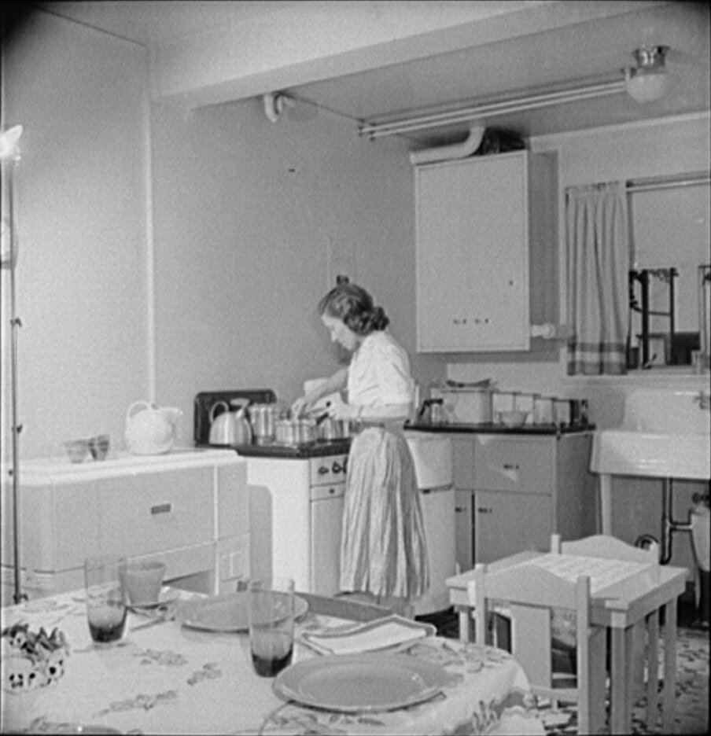

B1 · Everyday Life
Cooking and Coding
A programmer who cooks to stop thinking about work, and finds he is doing the same thing twice.
Play the audio and follow along, then read it again on your own. Tap or hover over a highlighted word to see what it means.
I write software all day, and I cook in the evenings to stop thinking about it. That was the theory, anyway. What has actually happened is that I have started to notice how similar the two things are, which was not the escape I had in mind.
It begins the same way every time. I pull everything out of the fridge and put it on the counter before I start, because the one evening I did not do that I got halfway through and discovered we had no garlic. Then I chop up the onions, slice the peppers and dice the garlic, and get the stock heating. None of that is cooking yet. It is the part that makes cooking possible, and skipping it is how you end up standing over a hot pan looking for something in a cupboard.
Then I fire up the stove and let the pan heat until it is properly hot — not almost hot, which is the mistake I made for about two years. I throw in the vegetables and let them cook down until they soften and lose their edge. While that happens I whip up a marinade and brush it onto the steaks I took out to thaw an hour ago, and I crank up the grill so it is ready when they are.
Somewhere in there I clean up the mess from the preparation — wipe down the counters, scrub off whatever has dried onto the board — because if I leave it until the end I will not do it at all. That is a rule I learned from work: deal with the small thing while it is still small.
With the meat on, I go and check the laptop, where I have left a long job running. I have a sous-vide machine set aside on the far counter for the evenings when I am being ambitious, and it has a recipe plugged into it that I wrote out myself and have adjusted four times. I pull the steaks off exactly when they are done and let them rest, which is the hardest instruction in cooking to follow, and log back in to see how far the job has got.
By then the kitchen looks like the end of a difficult week. I stack up the dishes, rinse them off, load the dishwasher, and let everything cool down while I sit with the food.

And this is where the parallel stops being amusing and starts being annoying, because both jobs are the same job. You break a big thing down into small ones. You do them in an order that matters more than it looks. You prepare everything before you commit to anything, because once the pan is hot you have no time to think. You clean up as you go. And at the end you have something that is worth more than the parts you put in, which is the only reason anybody does either of them.
The difference is that dinner is finished at eight o'clock. The program is never finished. It is only shipped.
Key Vocabulary
- to pull out to take something out of where it is stored
- counter the flat work surface in a kitchen
- to chop up to cut into pieces
- to dice to cut into small cubes
- stock the flavoured liquid used as the base of a sauce or soup
- to fire up to start a machine or a flame
- to throw in to add something to a pan quickly
- to cook down to cook until the volume reduces and the texture softens
- to whip up to make something quickly
- marinade a seasoned liquid meat is soaked in or brushed with
- to thaw to let frozen food return to room temperature
- to crank up to increase the heat or power of something
- to wipe down to clean a surface with a cloth
- to scrub off to remove something by rubbing hard
- to set aside to put something to one side to keep it available
- to rest to let cooked meat stand before cutting it
- to stack up to pile things one on top of another
- to rinse off to wash something quickly with water
- to cool down to become less hot
- to break down to divide something large into smaller parts
- to ship to release software to the people who will use it
Cooking and Coding — B1 · Everyday Life · Renan the Teacher, English Language Academy · https://renangrossi.github.io/englishclasses/reading/b1/kitchen-chaos.html
Interactive Exercises
Practice
Complete each exercise, then click Submit to see your score and an explanation for every answer.
Speaking & Writing
Discussion
There are no right answers here — use these to practice speaking, or write a short answer to each.
- “Deal with the small thing while it is still small.” Where else does that rule apply?
- The writer prepares everything before committing to anything. Are you that kind of cook, or do you improvise?
- “The program is never finished. It is only shipped.” Is there anything in your work that is never really finished?
- Describe a meal you cook regularly, using at least six phrasal verbs from this text.
- Write about 150 words comparing two things you do that turn out to use the same skill.